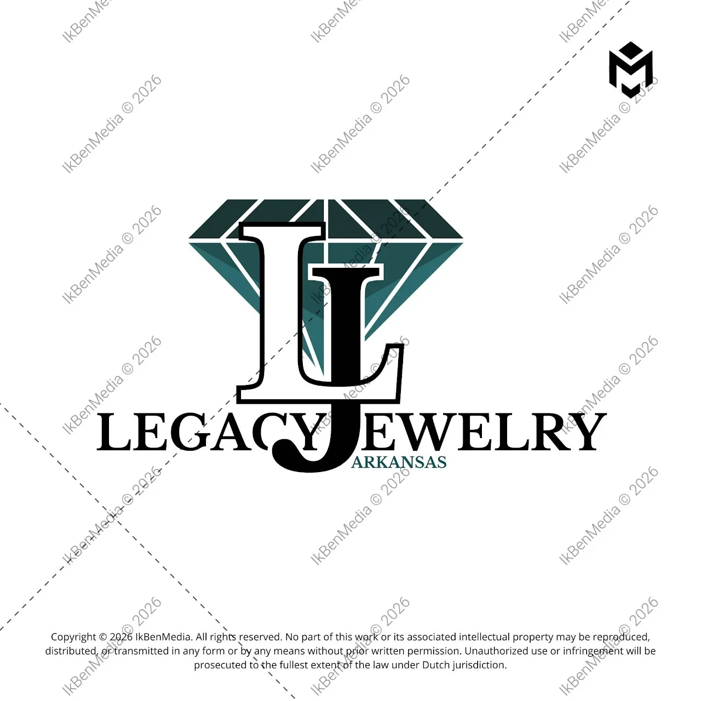
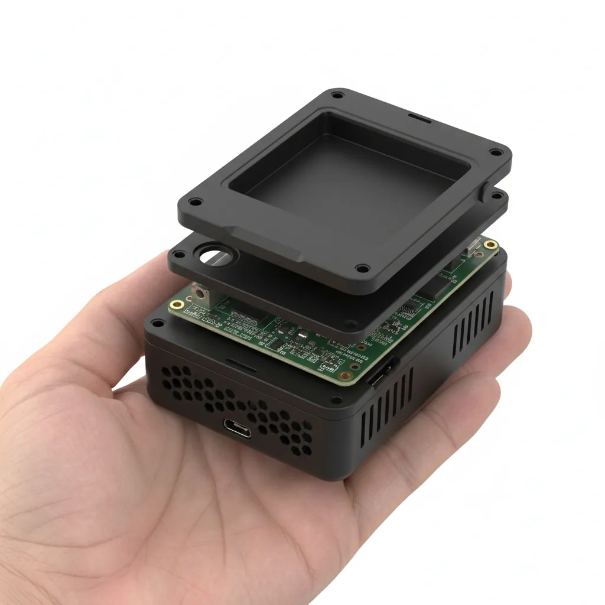
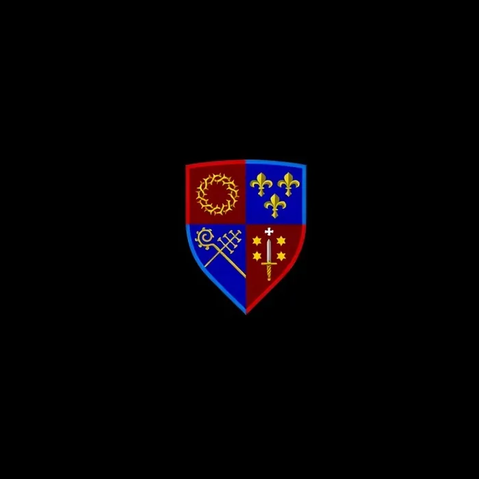

Logo, huisstijl en social media
LegacyJewelry
Een juwelier uit Arkansas wilde een logo dat chic is en toch persoonlijk. De letters L en J staan samen in een diamant. Daarna volgden de huisstijl en vaste ontwerpen voor social media.
Ischa Biesbrouck, grafisch ontwerper in Haarlem
Voor ondernemers en organisaties in Haarlem en daarbuiten. U werkt rechtstreeks met mij, van het eerste gesprek tot het laatste bestand.
Projecten met een verhaal, ontwerp met een ziel.
Alles wat uw bedrijf nodig heeft om herkend en onthouden te worden. Ontworpen door één persoon, dus alles past bij elkaar.


Een paar opdrachten en ontwerpstudies van het afgelopen jaar.

Logo, huisstijl en social media
Een juwelier uit Arkansas wilde een logo dat chic is en toch persoonlijk. De letters L en J staan samen in een diamant. Daarna volgden de huisstijl en vaste ontwerpen voor social media.

Ontwerpstudie, interface
Hoe typ je prettig op een scherm van vier centimeter? Een studie naar een toetsenbord dat leesbaar blijft en goed te raken is met een vinger.

Ontwerpstudie, product
Een compacte behuizing voor elektronica. Laag voor laag opgebouwd, zodat alles erin past en de vorm rustig blijft.
Vier stappen. U weet steeds wat er gebeurt en wat de volgende stap is.
We praten over uw bedrijf, uw klanten en wat u wilt bereiken. Daarna krijgt u een offerte en een planning.
Ik zoek uit wat bij u past en laat u een paar richtingen zien. Ik leg uit waarom ik voor iets kies.
We kiezen samen één richting. Die maak ik af. U geeft feedback en ik pas het aan.
U krijgt alle bestanden die u nodig heeft, met uitleg. Ook daarna kunt u bij mij terecht.
Al zo lang ik me kan herinneren, vind ik rust in het ordenen van chaos tot iets nieuws.
Letters, vormen, kleuren, beelden en ruimte zijn voor mij bouwstenen. Met IkBenMedia maak ik daar mijn werk van. Ik werk zelfstandig, zodat ik elke opdracht met volle aandacht kan doen.
Ik zoek steeds naar wat echt waarde heeft, voorbij de mode van het moment. Daarom ontwerp ik met oog voor detail en met een verhaal erachter.
Organisaties waarmee ik samenwerk of verbonden ben.

Katholieke herensociëteit in het bisdom Haarlem-Amsterdam. Voor jonge mannen die hun geloof willen delen en verdiepen.
Landelijke organisatie voor jongerenwerk. Voor kinderen, tieners en jongeren, wel of niet kerkelijk.
Advies en oplossingen op het gebied van kunstmatige intelligentie.
Het bisdom voor Noord-Holland en omstreken.
Staat uw vraag er niet tussen? Neem gerust contact op.
Dat hangt af van wat u nodig heeft. Een los logo is iets anders dan een complete huisstijl met website. Na een eerste gesprek krijgt u een offerte op maat. Zo weet u vooraf waar u aan toe bent.
Ook dat verschilt per opdracht. In het eerste gesprek maken we samen een planning. Heeft u een vaste datum, bijvoorbeeld een opening of een beurs? Vertel het mij op tijd, dan houd ik daar rekening mee.
Nee. Veel opdrachtgevers komen uit Haarlem en omgeving, maar ik werk ook voor klanten elders in Nederland. We kunnen afspreken op locatie of online.
Altijd met mij, Ischa. Ik doe het ontwerp zelf en ben uw vaste aanspreekpunt van begin tot eind.
Bellen of een sms sturen naar 06 28 35 12 90 werkt het snelst. U kunt ook mailen naar info@ikbenmedia.nl.